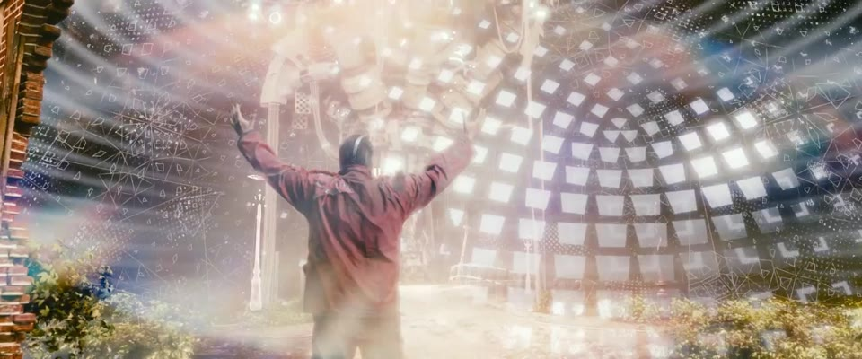
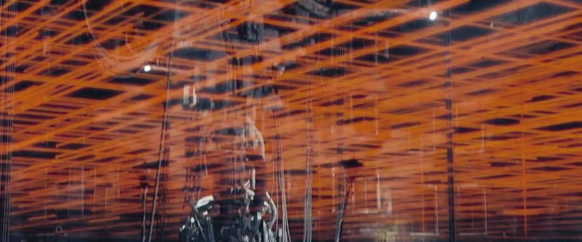

一个 MAC 小工具 · 翻译 · 截图 · 视频
做内容的时候
01 · 看英文
一句一句搬进翻译软件，再切回来。

02 · 截了图
截得越多，桌面越乱，挑几张都费劲。

03 · 好动效
却得下载整条，再进剪辑软件找。
名字很直白：截图翻译视频下载。
01 · 翻译
屏幕上看到的外文，就地盖上中文。滚动、换镜头，自动跟着翻。
点一下试试。再点一下，恢复原文。
粘贴进翻译框
自动出结果 · 不用点按钮
画面：《Tears of Steel》© Blender Foundation，CC BY 3.0。中文为本软件翻译引擎今天的实际输出，原样未改。
02 · 截图
像在访达里一样：拉个框，选中几张，一起拖进聊天框或文档。
分镜板
拖到这里
03 · 片段
贴上链接，在线预览。拖金色的起点、终点，只下载选中的这一段。
整部影片 12 分 14 秒，这次只取 4.7 秒
少下载约 99.4%（按时长估算）
04 · 水印
自动找角落里一直不动的标志；漏掉的，自己连续框。点错了，⌘Z。
两处水印是演示加上的虚构标识。右侧「处理后」是软件实际处理的结果。
05 · 字幕
自动找到字幕那一条。想要就留；不想要，抹掉或者裁掉。
原样保留。
什么都不动，最安全。
画面：《Tears of Steel》© Blender Foundation，CC BY 3.0。英文字幕为官方字幕，演示时烧进画面；三个版本均为软件实际处理结果。
从一句句抱怨里长出来
反馈 01
它现在不能一键翻译我的屏幕了。
查出免费翻译接口失效，换成本机离线翻译 + 必应，一句约 1 秒。
反馈 02
下载速度好慢呀。
原来下载没走代理：直连 30 KB/s，走代理 1–6 MB/s。
反馈 03
按住左键，框住我想要的。
截图中转站框选、拖走、Delete 删除。
反馈 04
我不想下整个视频。
在线预览，只下载选中的几秒，去水印同时完成。
反馈 05
水印有的时候不止一个。
连续框好几个，单击删掉，自动识别多处。
反馈 06
有时候想要字幕，有时候不想要。
字幕保留 / 抹掉 / 裁掉，自己选。
写在最后的几个数字
0个账号
不用注册，不用登录
打开就能用，没有会员和广告。
本机
识别、抠图、去水印
截图文字识别、去水印、抠图都在你的 Mac 上完成。
6.3秒
整部电影 76 句对白翻完
今天用《Tears of Steel》全片字幕实测，软件同款引擎。
8路
分片视频同时下载
自动走系统代理，带 JS 运行环境解开 YouTube 限速。
25→29.5MB
去水印后几乎不变大
直接替换原文件，只留一份；码率封顶在原片 1.3 倍。
MIT
开源许可
代码、安装步骤、使用说明，全部公开。
免费 · 开源 · 苹果芯片 Mac · macOS 14 起
祖仁泽，和 AI 一起，边用边改出来的。
扫码获取
github.com/zurenze1/
screenshot-translate-video-downloader
产品 · 设计 · 每一次吐槽
祖仁泽
一起写代码
Claude
演示影片
Tears of Steel (2012)© Blender Foundation · mango.blender.org · CC BY 3.0
本页片段经剪辑、静音；水印为演示添加的虚构标识
翻译
苹果离线翻译 · 必应翻译
视频下载与处理
yt-dlp · FFmpeg
文字识别 · 主体抠图
Apple Vision
许可
MIT
谢谢。